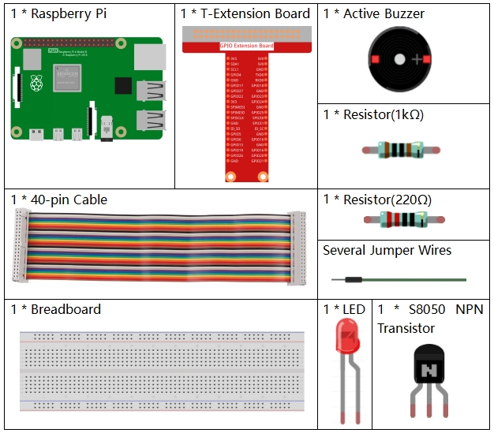

Nota
¡Hola! Bienvenido a la comunidad de entusiastas de SunFounder para Raspberry Pi, Arduino y ESP32 en Facebook. Únete para profundizar en Raspberry Pi, Arduino y ESP32 junto a otros apasionados.
¿Por qué unirte?
Soporte de Expertos: Resuelve problemas post-venta y desafíos técnicos con la ayuda de nuestra comunidad y equipo.
Aprende y Comparte: Intercambia consejos y tutoriales para mejorar tus habilidades.
Avances Exclusivos: Obtén acceso anticipado a anuncios de nuevos productos y vistas previas.
Descuentos Especiales: Disfruta de descuentos exclusivos en nuestros productos más recientes.
Promociones Festivas y Sorteos: Participa en sorteos y promociones de temporada.
👉 ¿Listo para explorar y crear con nosotros? Haz clic en [Aquí] y únete hoy.
3.1.11 Generador de Código Morse
Introducción
En esta lección, crearemos un generador de código Morse. Ingresarás una serie de letras en inglés en el Raspberry Pi y aparecerán en forma de código Morse.
Componentes
Diagrama Esquemático
T-Board Name |
physical |
wiringPi |
BCM |
GPIO17 |
Pin 11 |
0 |
17 |
GPIO22 |
Pin 15 |
3 |
22 |
Procedimientos Experimentales
Paso 1: Construye el circuito. (Presta atención a los polos del zumbador: el marcado con + es el polo positivo y el otro es el negativo.)

Para Usuarios de Lenguaje C
Paso 2: Abre el archivo de código.
cd ~/davinci-kit-for-raspberry-pi/c/3.1.11/
Paso 3: Compila el código.
gcc 3.1.11_MorseCodeGenerator.c -lwiringPi
Paso 4: Ejecuta el archivo ejecutable.
sudo ./a.out
Después de ejecutar el programa, escribe una serie de caracteres y el zumbador y el LED enviarán las señales correspondientes en código Morse.
Nota
Si no funciona después de ejecutarlo, o aparece un mensaje de error: "wiringPi.h: No such file or directory», consulta c code is not working?.
Explicación del Código
struct MORSE{
char word;
unsigned char *code;
};
struct MORSE morseDict[]=
{
{'A',"01"}, {'B',"1000"}, {'C',"1010"}, {'D',"100"}, {'E',"0"},
{'F',"0010"}, {'G',"110"}, {'H',"0000"}, {'I',"00"}, {'J',"0111"},
{'K',"101"}, {'L',"0100"}, {'M',"11"}, {'N',"10"}, {'O',"111"},
{'P',"0110"}, {'Q',"1101"}, {'R',"010"}, {'S',"000"}, {'T',"1"},
{'U',"001"}, {'V',"0001"}, {'W',"011"}, {'X',"1001"}, {'Y',"1011"},
{'Z',"1100"},{'1',"01111"}, {'2',"00111"}, {'3',"00011"}, {'4',"00001"},
{'5',"00000"},{'6',"10000"}, {'7',"11000"}, {'8',"11100"}, {'9',"11110"},
{'0',"11111"},{'?',"001100"}, {'/',"10010"}, {',',"110011"}, {'.',"010101"},
{';',"101010"},{'!',"101011"}, {'@',"011010"}, {':',"111000"}
};
Esta estructura MORSE es el diccionario del código Morse y contiene los caracteres de la A a la Z, los números del 0 al 9 y los símbolos "?" "/" ":" "," "." ";" "!" "@" .
char *lookup(char key,struct MORSE *dict,int length)
{
for (int i=0;i<length;i++)
{
if(dict[i].word==key){
return dict[i].code;
}
}
}
La función lookup() funciona como un «diccionario». Define una clave, busca en la estructura morseDict la palabra que coincide con key y devuelve la información correspondiente —el "code" de esa palabra.
void on(){
digitalWrite(ALedPin,HIGH);
digitalWrite(BeepPin,HIGH);
}
Crea una función on() para activar el zumbador y el LED.
void off(){
digitalWrite(ALedPin,LOW);
digitalWrite(BeepPin,LOW);
}
La función off() apaga el zumbador y el LED.
void beep(int dt){
on();
delay(dt);
off();
delay(dt);
}
Define una función beep() para hacer que el zumbador y el LED emitan sonidos y parpadeen en un intervalo determinado de dt.
void morsecode(char *code){
int pause = 250;
char *point = NULL;
int length = sizeof(morseDict)/sizeof(morseDict[0]);
for (int i=0;i<strlen(code);i++)
{
point=lookup(code[i],morseDict,length);
for (int j=0;j<strlen(point);j++){
if (point[j]=='0')
{
beep(pause/2);
}else if(point[j]=='1')
{
beep(pause);
}
delay(pause);
}
}
}
La función morsecode() procesa el código Morse de los caracteres ingresados haciendo que el «1» del código emita sonidos o luces prolongados, mientras que el «0» produce sonidos o luces breves; por ejemplo, al ingresar «SOS», se generará una señal con tres segmentos cortos, tres largos y luego tres cortos « · · · - - - · · · «.
int toupper(int c)
{
if ((c >= 'a') && (c <= 'z'))
return c + ('A' - 'a');
return c;
}
char *strupr(char *str)
{
char *orign=str;
for (; *str!='\0'; str++)
*str = toupper(*str);
return orign;
}
Antes de codificar, debes unificar las letras en mayúsculas.
void main(){
setup();
char *code;
int length=8;
code = (char*)malloc(sizeof(char)*length);
while (1){
printf("Please input the messenger:");
delay(100);
scanf("%s",code);
code=strupr(code);
printf("%s\n",code);
delay(100);
morsecode(code);
}
}
Cuando ingreses los caracteres relevantes con el teclado, code=strupr(code) convertirá las letras ingresadas a mayúsculas.
Printf() luego imprimirá el texto claro en la pantalla de la computadora, y la función morsecode() hará que el zumbador y el LED emitan el código Morse.
Ten en cuenta que la longitud de los caracteres ingresados no debe exceder el length (se puede modificar).
Para Usuarios de Lenguaje Python
Paso 2: Abre el archivo de código.
cd ~/davinci-kit-for-raspberry-pi/python
Paso 3: Ejecuta.
sudo python3 3.1.11_MorseCodeGenerator.py
Después de ejecutar el programa, escribe una serie de caracteres y el zumbador y el LED enviarán las señales correspondientes en código Morse.
Código
Nota
Puedes Modificar/Restablecer/Copiar/Ejecutar/Detener el código a continuación. Pero antes, necesitas dirigirte a la ruta del código fuente, como davinci-kit-for-raspberry-pi/python.
import RPi.GPIO as GPIO
import time
BeepPin=22
ALedPin=17
MORSECODE = {
'A':'01', 'B':'1000', 'C':'1010', 'D':'100', 'E':'0', 'F':'0010', 'G':'110',
'H':'0000', 'I':'00', 'J':'0111', 'K':'101', 'L':'0100', 'M':'11', 'N':'10',
'O':'111', 'P':'0110', 'Q':'1101', 'R':'010', 'S':'000', 'T':'1',
'U':'001', 'V':'0001', 'W':'011', 'X':'1001', 'Y':'1011', 'Z':'1100',
'1':'01111', '2':'00111', '3':'00011', '4':'00001', '5':'00000',
'6':'10000', '7':'11000', '8':'11100', '9':'11110', '0':'11111',
'?':'001100', '/':'10010', ',':'110011', '.':'010101', ';':'101010',
'!':'101011', '@':'011010', ':':'111000',
}
def setup():
GPIO.setmode(GPIO.BCM)
GPIO.setup(BeepPin, GPIO.OUT, initial=GPIO.LOW)
GPIO.setup(ALedPin,GPIO.OUT,initial=GPIO.LOW)
def on():
GPIO.output(BeepPin, 1)
GPIO.output(ALedPin, 1)
def off():
GPIO.output(BeepPin, 0)
GPIO.output(ALedPin, 0)
def beep(dt): # dt es el tiempo de retardo.
on()
time.sleep(dt)
off()
time.sleep(dt)
def morsecode(code):
pause = 0.25
for letter in code:
for tap in MORSECODE[letter]:
if tap == '0':
beep(pause/2)
if tap == '1':
beep(pause)
time.sleep(pause)
def main():
while True:
code=input("Please input the messenger:")
code = code.upper()
print(code)
morsecode(code)
def destroy():
print("")
GPIO.output(BeepPin, GPIO.LOW)
GPIO.output(ALedPin, GPIO.LOW)
GPIO.cleanup()
if __name__ == '__main__':
setup()
try:
main()
except KeyboardInterrupt:
destroy()
Explicación del Código
MORSECODE = {
'A':'01', 'B':'1000', 'C':'1010', 'D':'100', 'E':'0', 'F':'0010', 'G':'110',
'H':'0000', 'I':'00', 'J':'0111', 'K':'101', 'L':'0100', 'M':'11', 'N':'10',
'O':'111', 'P':'0110', 'Q':'1101', 'R':'010', 'S':'000', 'T':'1',
'U':'001', 'V':'0001', 'W':'011', 'X':'1001', 'Y':'1011', 'Z':'1100',
'1':'01111', '2':'00111', '3':'00011', '4':'00001', '5':'00000',
'6':'10000', '7':'11000', '8':'11100', '9':'11110', '0':'11111',
'?':'001100', '/':'10010', ',':'110011', '.':'010101', ';':'101010',
'!':'101011', '@':'011010', ':':'111000',
}
Esta estructura MORSE es el diccionario del código Morse, que contiene los caracteres de la A a la Z, los números del 0 al 9 y los símbolos "?" "/" ":" "," "." ";" "!" "@".
def on():
GPIO.output(BeepPin, 1)
GPIO.output(ALedPin, 1)
La función on() activa el zumbador y el LED.
def off():
GPIO.output(BeepPin, 0)
GPIO.output(ALedPin, 0)
La función off() se utiliza para apagar el zumbador y el LED.
def beep(dt): # dt es el tiempo de retardo.
on()
time.sleep(dt)
off()
time.sleep(dt)
Define una función beep() para hacer que el zumbador y el LED emitan sonidos y parpadeen en un intervalo determinado de dt.
def morsecode(code):
pause = 0.25
for letter in code:
for tap in MORSECODE[letter]:
if tap == '0':
beep(pause/2)
if tap == '1':
beep(pause)
time.sleep(pause)
La función morsecode() procesa el código Morse de los caracteres ingresados haciendo que el «1» del código emita sonidos o luces prolongados, mientras que el «0» produce sonidos o luces breves; por ejemplo, al ingresar «SOS», se generará una señal con tres segmentos cortos, tres largos y luego tres cortos « · · · - - - · · · «.
def main():
while True:
code=input("Please input the messenger:")
code = code.upper()
print(code)
morsecode(code)
Cuando ingreses los caracteres relevantes con el teclado, upper() convertirá las letras ingresadas a mayúsculas.
Printf() luego imprimirá el texto claro en la pantalla de la computadora, y la función morsecode() hará que el zumbador y el LED emitan el código Morse.